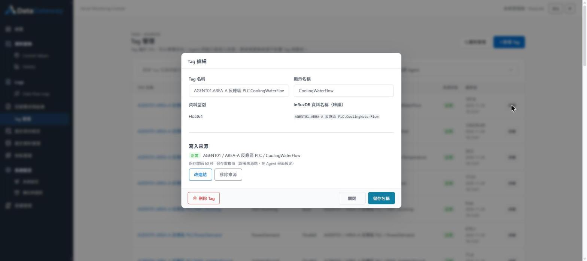

Tag 管理
Tag 屬於 DG，可以單獨存在；Agent 的點只是 Tag 的寫入來源。拿掉或更換來源不影響 Tag 與歷史。
查看 Tag 與來源狀態

- 來源（AGENT／連線／點）
- 目前寫入這個 Tag 的 Agent 點。
- 來源狀態
- 正常、來源離線、來源停用、無來源、型別不符。
- 最新值
- 最近一筆值與時間。
- 用搜尋框輸入 Tag 名稱或顯示名稱。
- 用「全部來源狀態」「全部 Agent」篩選，例如只看「來源離線」或「（無來源）」。
- 按「重新整理」更新最新值。
清單只留下符合條件的 Tag，可快速找到來源異常的點。
失敗時先查
- Agent 新增的點沒有出現：確認 Agent 已核准且 Online，再按「重新整理」。
新增 Tag
- 按「＋新增 Tag」。
- 填 Tag 名稱、顯示名稱（可空白），選資料型別。
- 按建立。
畫面顯示「已新增 Tag「名稱」（無來源）」。之後可用 7.3「改連結」接上 Agent 的點。
先建立 Tag 再接來源，適合換設備時沿用同一個 Tag 與歷史。
失敗時先查
- 名稱重複會被拒絕，請改名。
改名、更換或移除來源

- 按該 Tag 的「詳細」。
- 改名：修改 Tag 名稱或顯示名稱，按「儲存名稱」。InfluxDB 資料名稱是唯讀，改名不影響已保存的歷史。
- 更換來源：按「改連結」，依序選 Agent、連線與點（只列出相同資料型別的點）後確認。若該點已連到另一個 Tag，會跳出「這個點已連到另一個 Tag」，確認後原 Tag 變成「無來源」。
- 移除來源：按「移除來源」，確認視窗「移除來源？」後確認。Tag 變成「無來源」，該點之後不會再自動建立 Tag。
- 按「關閉」離開。
清單的來源欄與來源狀態更新；歷史資料保留在同一個 Tag 下。
失敗時先查
- 點選單是空的：該 Agent 沒有相同資料型別的點。
刪除 Tag
- 先到「備份與還原」備份（第 12 章）。
- 開啟該 Tag 的「詳細」，按左下「刪除 Tag」。
- 確認視窗「刪除 Tag？」說明會一併刪除來源連結、保存設定與所有歷史數值（TimescaleDB 與 InfluxDB），核對後確認。
Tag 從清單消失，並寫入操作紀錄。
刪除 Tag 會刪除它全部的歷史資料，無法復原。只想停止收資料時，請改用「移除來源」。
失敗時先查
- 只想清掉部分時間的歷史：改用「歷史資料管理 › 查詢與刪除資料」（第 9 章）。